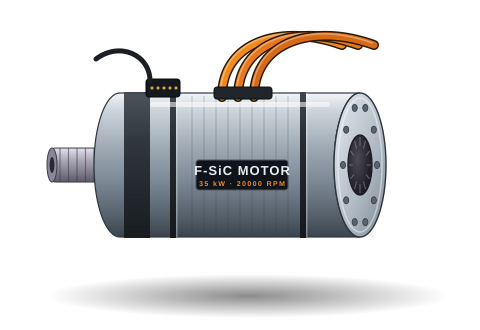
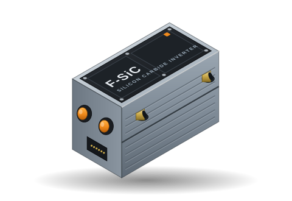
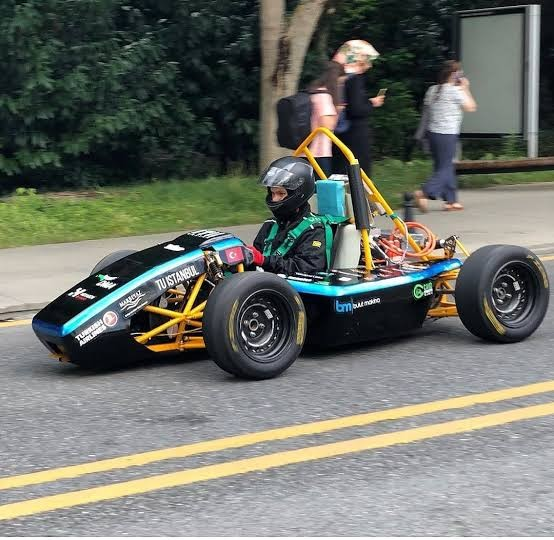
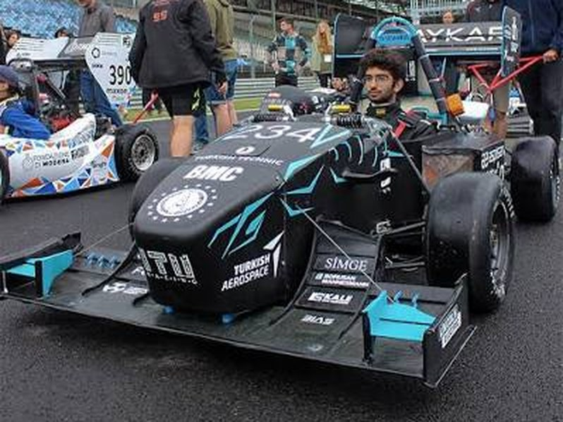
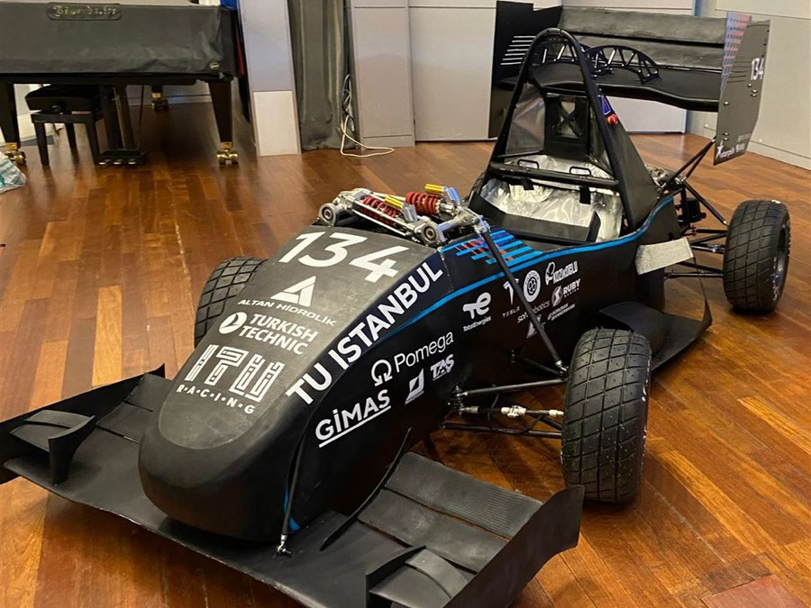
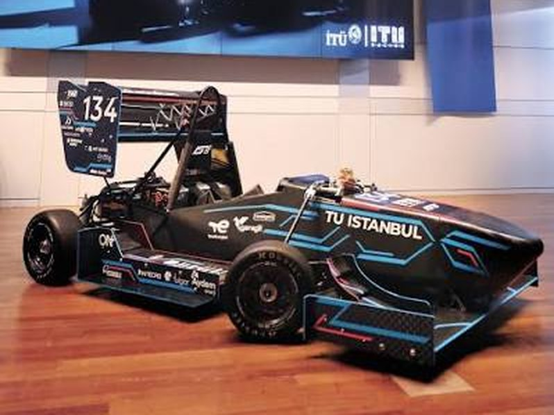
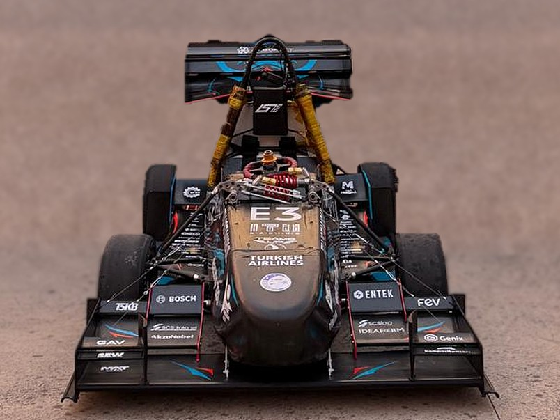
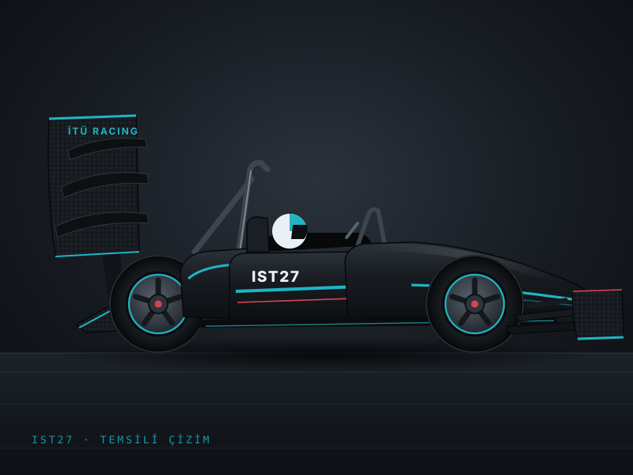
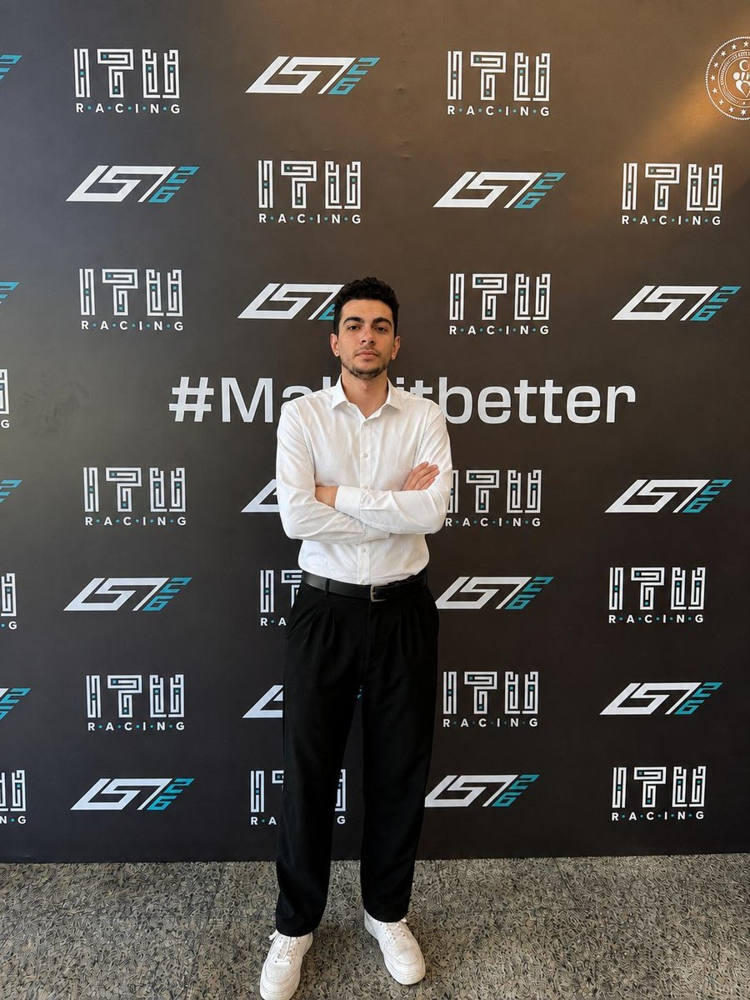

Gayriresmî çeviri. Kaynak: Formula Student Rules 2027, Version 1.0 (FSG). Bağlayıcı metin her zaman İngilizcesidir; Türkçe bölüm okumayı kolaylaştırmak için hazırlanmıştır ve hata içerebilir. Tablo, formül ve şekiller orijinal PDF'ten görüntü olarak soldaki sütundadır; Türkçeleri yanında yazıyla verilmiştir. Madde numaralarına (örn. T 3.2.1) tıklayarak ilgili maddeye gidebilirsiniz. Sürüm değişiklikleri listesi (Changelog) dahil değildir.
English
Türkçe
Açıklama
Sonuç bulunamadı.
İTÜ Racing · Takım ve araç bilgisi
Araç ve Takım Hakkında
İTÜ Racing takımı, aracın çekiş sistemi (batarya, motor, inverter) ve yarışma hakkında kısa bilgiler.
Batarya600 V DCKural sınırı: azami 600 V DC (EV 4.1.1)

MotorDTI F-SiC e-motor35 kW tepe · 31,6 Nm tepe · 20.000 rpm · 3,7 kg

InverterDTI F-SiC inverterSiC güç katı · 2 modül / blok · 70 kW tepe · 1,1 kg
İTÜ Racing Hakkında
Kuruluş2007Uluslararası Formula Student yarışmalarına katılmak amacıyla kuruldu.
Üretilen araç5 araç3 içten yanmalı, 1 elektrikli-otonom ve 1 elektrikli Formula Student aracı.
Son başarıFS Türkiye 2025Elektrikli kategorisi genel birinciliği (22–26 Ekim 2025).
İTÜ Racing, İstanbul Teknik Üniversitesi’nin proje takımlarından biridir. Farklı mühendislik bölümlerinden öğrencilerden oluşur ve her yıl yeni bir Formula Student aracı tasarlayıp üretir.
Vizyon
Formula Student takımları arasında yenilikçilik, rekabetçilik ve yetkinlikle dünya çapında tanınan prestijli takımlardan biri olmak; ülkemizi ve üniversitemizi en iyi şekilde temsil etmek.
Misyon
Otomotiv teknolojilerine ilgi duyan mühendislik öğrencilerinin yeteneklerini sergileyebileceği, sürdürülebilir bir takım ortamı sağlamak.
IST-24
Takımın elektrikli aracı; 12 Temmuz 2024’te İTÜ Ayazağa Kampüsü Süleyman Demirel Kültür Merkezi’nde tanıtıldı. Türkiye’de bir ilk olarak anılan “split” süspansiyon sistemini içerir, batarya yönetim sistemi (BMS) takım tarafından tasarlanmıştır. Alt sistemlerin geliştirildiği öğrenci projelerinden 15’i TÜBİTAK 2209-A desteği almıştır.
Formula Student Türkiye 2025
İlk kez düzenlenen yarışma 22–26 Ekim 2025’te TOSFED Körfez Pisti’nde yapıldı (12 takım, 7 araç). İTÜ Racing elektrikli kategoride genel birinci oldu; mühendislik tasarımı, maliyet ve üretim, iş planı sunumu, autocross ve endurance disiplinlerinde de birinci oldu.
Diğer
Takım sayfasında 2019 Teknofest İnsansız Kara Aracı Yarışması birinciliği de listelenmiştir.
İletişim
racing.itu.edu.tr · ituformula@gmail.com · İTÜ Reşitpaşa, Merkez Spor Salonu, Sarıyer/İstanbul
Alt ekipler
Batarya
Gerilim
600 V DC
Kural sınırı
İki elektrik bağlantısı arasında oluşabilecek azami gerilim 600 V DC’dir (EV 4.1.1). TS’deki tüm bileşenler azami TS gerilimine uygun olmalıdır (EV 4.1.2).
İnverter sınırı
F-SiC için azami sistem gerilimi 600 Vdc, çalışma aralığı 36–620 VDC.
Not: 600 V hem kuralın hem inverterin üst sınırıdır. DTI belgelerine göre 600 V’u aşan yüksek gerilim geçişleri (transient) inverter ve/veya motora zarar verebilir; bu yüzden şarj sonu gerilimi ve rejenerasyon/anahtarlama sıçramaları için pay bırakmak gerekir.
İnverter — DTI F-SiC
Her F-SiC ünitesinde iki bağımsız inverter modülü ortak bir soğutma plakasına sandviç yapıda yerleştirilmiştir. Formula Student kurallarına uygun, formül ve ultra hafif uygulamalar için tasarlanmıştır.
Gerçeğe benzer çizim (üretici fotoğrafı değildir)
Yapı
2 bağımsız inverter modülü tek gövdede (1 blok)
Güç katı
Silisyum karbür (SiC)
Çalışma gerilimi
36–620 VDC (azami sistem gerilimi 600 Vdc)
Akım
80 / 40 Arms (tepe / sürekli); modül başına 120 Apk tepe, blok başına 240 Apk tepe
Güç
Modül başına 35 kW tepe, blok başına 70 kW tepe
Kontrol
FOC, MTPA / MFW desteği; ARM Cortex-M7 MCU; motor parametrelerini otomatik algılar
Anahtarlama frekansı
8–30 kHz
Azami eRPM
200.000
Konum sensörü
ABI+SSI / Resolver / EnDat 2.1–2.2 (EnDat desteği üretici sayfasında bir yazılım güncellemesi olarak belirtilmiştir)
Haberleşme
CAN (CAN1: OBD konnektörü, CAN2: VCU); dahili sonlandırma direnci kapak altındaki DIP anahtarla açılır
Besleme
12 V, modül başına en az 2 A
Konnektörler
HV DC, HV AC, konum sensörü, alçak gerilim
Soğutma
Sıvı soğutma
Çalışma sıcaklığı / koruma
−20 … 85 °C · IP44
Boyut
96,4 (Y) × 78 (G) × 153,7 (U) mm
Ağırlık
1,1 kg / blok (modül başına 550 g)
Motor — DTI F-SiC e-motor
Kit için geliştirilen ilk DTI e-motoru. Tekerlek içi (hub) motor uygulamasına uygundur; milde titanyum kullanılarak rotor ve toplam ağırlık düşürülmüştür. Interlock devresi için ayrılmış bir geçiş bulunur.
Gerçeğe benzer çizim (üretici fotoğrafı değildir)
Tepe / nominal güç
35 kW / 15,4 kW
Tepe / nominal tork
31,6 Nm / 11 Nm
Tepe / nominal akım
66 Arms / 22,6 Arms
Azami / nominal devir
20.000 rpm / 13.250 rpm
Tepe verim
%96’nın üzerinde
Mil
Titanyum (Grade 5), iç spline
Konum sensörü
Resolver
Sıcaklık sensörü
PT1000
Soğutma
Motorun kendi soğutması yok; harici soğutma gerekir (hub motorda genellikle upright’a entegre edilir)
Boyut
Ø94,5 × 160 mm
Ağırlık
3,7 kg
Kit seçenekleri (DTI)
AWD kit
2 inverter bloğu + 4 motor · 17 kg · kitin tamamında 8,5 kW/kg güç yoğunluğu
2WD (RWD) kit
1 inverter bloğu + 2 motor · 8,5 kg
Değerler üretici ve distribütör sayfalarından alınmıştır; tasarımda kullanmadan önce güncel DTI dokümantasyonuyla doğrulayın.
Elektronik Hesap Araçları
Hızlı ön hesaplar içindir; yaklaşık sonuç verir. Resmî uygunluk için ilgili kural maddesine, ASES ve Event Handbook’a bakın.
Akümülatör paketi
Hücre ve seri/paralel sayısından paket gerilimi, enerji ve bölme (section) sınırları. Bölme sınırları için seri dizinin bölmelere eşit paylaştığı varsayılır.
Deşarj: SDC açılınca TS gerilimi 5 s içinde 60 V altına inmeli (EV 6.1.5). Ön şarj: AIR’lerin araç tarafı gerilimin en az %95’ine ulaşmalı (EV 5.7.1).
Gerilim bölücü
Yüksek gerilimi ADC veya ölçüm girişine indirmek için. R1 üstte, R2 altta (ölçüm noktası ortada).
Yarışma
Yarışma
Formula Student Germany (FSG) — Hockenheimring, Almanya
Ne?
Üniversite öğrencilerinin bir yılda tasarlayıp ürettiği formül tipi yarış araçlarıyla katıldığı uluslararası mühendislik yarışması. Takımlar hem araç performansı hem de tasarım, maliyet ve iş planı sunumlarıyla puanlanır.
Sınıflar
Elektrikli (EV) ve içten yanmalı (CV); ek olarak Driverless Cup (A 1.2.1, A 1.2.6). Bizim araç EV sınıfındadır.
Akış
Önce güvenlik ve kural uygunluğu için Teknik Kontrol (IN); ardından statik ve dinamik disiplinler (S, D) (A 1.2.3, A 1.2.4).
Kazanan
Sınıfında en çok toplam puanı alan takım (A 1.2.9).
Tarih (FSG 2026)
11–16 Ağustos 2026, Hockenheim. FSG 2027 tarihleri resmî duyuruyla netleşecek (formulastudent.de).
Katılım (FSG 2025)
25’ten fazla ülkeden 84 elektrikli takım, 3000’den fazla öğrenci.
Dil ve kurallar
Resmî dil İngilizcedir (A 1.3.1); etkinliğe özgü kurallar Event Handbook’tadır (A 1.3.3).
Disiplinler ve azami puanlar (EV) — Rules 2027, Table 1 (A 1.2.8)
Statik disiplin
Puan
Business Plan Presentation (iş planı sunumu)
75
Cost and Manufacturing (maliyet ve üretim)
100
Engineering Design (mühendislik tasarımı)
150
Dinamik disiplin
Puan
Skidpad (8 şeklinde pist)
50
Acceleration (hızlanma)
50
Autocross
100
Endurance (dayanıklılık)
250
Efficiency (verimlilik)
75
Table 1’de “Overall” satırı 1000 puan olarak yazar; yukarıdaki kalemlerin toplamı ise 850’dir. Kesin dağılım için kuralların kendisine bakın.
Sıralamalar: Takımların ve yarışmaların dünya sıralamasına FS World — EV sıralaması (fs-world.org/ranking/ev/433) sayfasından ulaşabilirsiniz. Bu sayfa Formula Student World Ranking List’i gösterir; “özel (resmî olmayan) sıralama” olarak işaretlidir, resmî sonuçlar için ilgili yarışmanın sonuç listelerine bakın.
İTÜ Racing · Elektrikli araçlar
EV Araçlarımız
İTÜ Racing’in elektrikli araçları: Beelectric’ten IST26’ya; sırada IST27 var.

Beelectric Driverless
2018–2019
Beelectric Driverless
ElektrikliOtonomTürkiye’nin ilk
Türkiye’nin ilk elektrikli ve otonom yarış aracı.
Otonom sürüş sistemi geliştirilirken Turkish Traffic Sign Dataset (Türk trafik işaretleri veri seti) projesi başlatıldı.
Formula SAE Italy 2019 Driverless Design Event’e katıldı.
Bu araçtan edinilen tecrübeyle takım 2019 TEKNOFEST Otonom Kara Araçları Yarışması’nda birinci oldu.

Beelectric 02
2022
Beelectric 02 (DT BeElectric-02)
Elektrikliİlk elektrikli Formula Student aracımızYarı monokok şasi
Tasarımına Ağustos 2021’de başlandı; 10’dan fazla mühendislik alanından 60 öğrenci çalıştı.
Türkiye’nin ilk monokok şasili Formula Student aracı: hibrit (yarı) monokok şasi, 10 inç jant, karbon fiber askı kolları. Kompozit şasi BAYKAR tesislerinde üretildi.
Motorun nominal gücü basında 93,2 kW olarak verildi; altın sponsoru TotalEnergies’tir.
2022’de Formula Student Czech’te, 2023’te Formula Student East’te (Macaristan) yarıştı. Teknik kontrolleri geçemese de elektrikli kategoriye geçişte takımın bilgi birikimini büyük ölçüde artırdı.

IST24
2024
IST24
Elektrikliİlk teknik kontrol geçişiİlk Endurance bitişi
12 Temmuz 2024’te İTÜ Ayazağa Kampüsü Süleyman Demirel Kültür Merkezi’nde tanıtıldı.
Türkiye’de bir ilk olarak anılan “split” süspansiyon sistemi; batarya yönetim sistemi (BMS) takım tarafından tasarlandı.
Alt sistemler öğrenci projeleri olarak geliştirildi; 15 proje TÜBİTAK 2209-A desteği aldı.
2024 sezonunda Formula Student East (Macaristan) ve Formula Student ATA’da (İtalya) yarıştı. Macaristan’da iş planı sunumunda 10. oldu.
İtalya’da takım tarihinde ilk kez elektrikli kategoride tüm teknik kontrolleri geçti; Autocross ve Endurance’a katıldı, Endurance’ı ilk kez tamamladı ve iş planında yine ilk 10’a girdi.

IST25
2025
IST25
ElektrikliTürkiye şampiyonu
Formula Student ATA’da (İtalya) tüm teknik kontrolleri geçti, tüm dinamik disiplinlerde yarıştı, tüm statik disiplinlerde ilk 10’a girdi ve takımın o güne dek en yüksek puanını aldı (resmî sonuçlarda genel 11.).
İlk kez düzenlenen Formula Student Türkiye’de (22–26 Ekim 2025, TOSFED Körfez Pisti) elektrikli kategoride genel birinci oldu; mühendislik tasarımı, maliyet ve üretim, iş planı sunumu, autocross ve endurance’ta da birinci oldu.
Türkiye’nin en iyi elektrikli Formula Student takımı unvanını aldı.

IST26
2026
IST26 · “IST26 powered by Electrip | Zes”
ElektrikliEn son tamamlanan araçFormula ATA 2026
İsim sponsoru Zes: araç “IST26 powered by Electrip | Zes” adıyla piste çıktı.
15 farklı alt sistemde TÜBİTAK onayı alındı.
Aerodinamik iyileştirmelerle bir önceki araca göre %32 daha fazla yere basma kuvveti hedeflendi.
Simülasyonlara göre 0’dan 100 km/s hıza 2,4 saniyede ulaşabiliyor.
Formula Student ATA 2026’da (Varano de’ Melegari, İtalya; Eylül 2026) elektrikli sınıfta yarıştı.
Formula SAE Italy 2026 · Sınıf 1EVResmî sonuçlar · araç no. 133
Genel23.30 takım içinde
İş planı11.BPP · 57,837 puan
Tasarım105,634puan
Maliyet70,993puan
Toplam184,46450 ceza düşülmüş
Statik disiplinlerin toplamı 234,464 puandır; resmî tabloda 50 puan ceza düşülmüştür ve dinamik disiplinlerde puan kaydı yoktur. Kaynak: Formula ATA genel sıralama · BPP sonuçları.

IST27
2027 sezonu
IST27
ElektrikliYapım aşamasında
IST27 yükleniyor
Bu sene takımın yeni aracı IST27 geliştiriliyor; tasarım ve üretim çalışmaları sürüyor.
2027 sezonu yarışları için hazırlanıyor; sezon kuralları bu portaldaki Kurallar sekmesinde.
Kural maddelerini tek tek işaretle: Tamam, Eksik ya da Sorun var. İşaretlerin bu tarayıcıda saklanır; “Raporu kopyala” ile eksik ve sorunlu maddeleri metin olarak alabilirsin.
İTÜ Racing · Elektronik
PCB Kontrol Listesi
Takımın kartlarını, ölçülerini ve her karta özel kural kontrol listesini tek yerde topla. Kontrol maddeleri FSG 2027 kurallarından gelir; her kart için hangi kural gruplarının geçerli olduğunu sen belirlersin. İşaretlerin ve notların bu tarayıcıda saklanır.
Kartlar
Başlığa tıklayarak sırala; bir satıra tıklayınca o kartın kontrol listesi açılır. Ölçüler kart taslaklarından alınmıştır (mm).
Ölçekli kart haritası
Kartlar birbirine oranlı çizilir (arka plandaki kareler 10 mm). Sol kenar rengi kontrol durumunu gösterir.
BaşlanmadıHepsi tamamEksik varSorun var
Mesafe hesabı
TS ve LV arası mesafe (Tablo 3)
Aynı kartta TS ve LV bölgeleri arasında en az bu hava (clearance) ve yüzey (creepage) mesafesi bulunmalı (EV 4.3.6). Ölçtüğün değerleri girerek karşılaştır.
Gerilim (DC)
Hava (clearance)
Yüzey (creepage)
Kaplamalı yüzey
0 – 50 V
1,0 mm
4 mm
1,0 mm
50 – 150 V
1,0 mm
5 mm
1,0 mm
150 – 300 V
1,5 mm
10 mm
2,0 mm
300 – 600 V
3,0 mm
20 mm
4,0 mm
Kart kontrol listesi
Malzeme listesi (BOM)
Seçili kartın parça listesi, tedarikçisi (sponsorlar dahil) ve sipariş durumu. Değişiklikler kendiliğinden kaydedilir.
Sipariş özeti
Tüm kartlarda “Gerekli” ya da “Sipariş verildi” durumundaki parçalar, tedarikçiye göre gruplanmış.
İTÜ Racing · Hesap
Profil
Adını, birimini ve profil fotoğrafını buradan yönet. Bu sürümde bilgiler yalnızca bu cihazda saklanır; hesapla eşitleme uygulama sürümünde çalışır.
Üye olmadan kuralları, araç sayfalarını ve kural sınavını kullanabilirsin. Ortak checklist, PCB kontrolü, görevler, yorumlar ve takvim onaylı takım üyelerine açıktır.
JPG, PNG veya WEBP. Fotoğrafın ortası kare olarak kırpılır ve 256×256 piksele küçültülür.
Checklist ve PCB Kontrol işaretlemeleri ile notlar hesabına kaydedilir.
Yer imlerin hesabına kaydedilir.
Telefon ve bilgisayar arasında her şey eşitlenir.
Son PDF’lerim bu cihazda
İndirdiğin son 6 PDF burada saklanır; internet yokken de açabilirsin.
İTÜ Racing · Takım
Takım
Teslim takvimi, görevler, bildirimler, takım listesi ve kural sınavı tek yerde.
Görevler, teslim takvimi, bildirimler ve kural yorumları sitenin uygulama sürümünde onaylı takım üyelerine açık: berkracemuh.github.io/itu-racing-portal. Kural sınavını burada da çözebilirsin.
Bildirimler
Görevlerim
Teslim takvimi
Teslim arşivi
Ekibimin görevleri
Açık görevler
Son hareketler
Değişiklik geçmişi
Takım yapısı
Takım listesi
Kural sınavı

Yarış Mühendisi
Berk Ay - İTÜ Elektrik Elektronik Fakültesi
İTÜ Racing · Kural kitapçığıKuralları PDF olarak indir